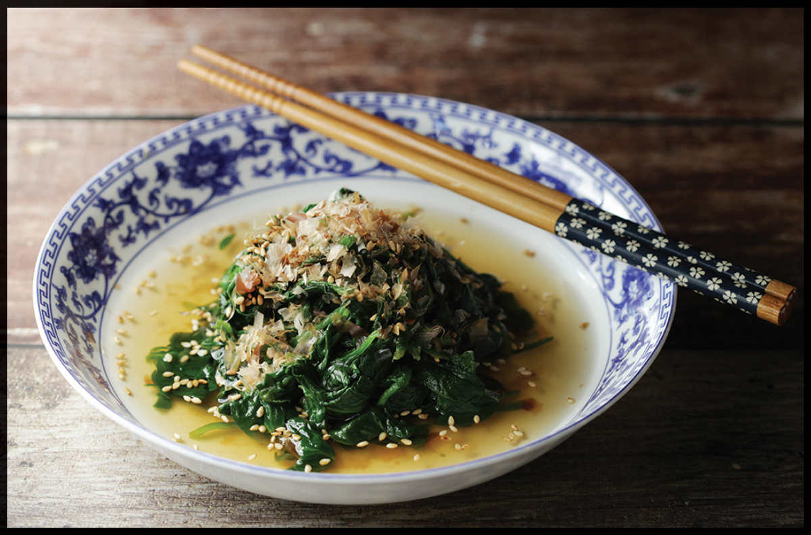

SIMMERED GREENS WITH SOY DASHI AND KATSUOBUSHI (OHITASHI)
|
Yield Serves 2 to 4 |
Active Time 10 minutes Total Time 10 minutes |
You can use any tender greens that are suitable for blanching for this recipe. Greens can be blanched in advance, dressed, and stored in the fridge for up to a couple days before serving if desired. Hondashi is powdered dashi that can be found at any Japanese market and most well-stocked supermarkets.
INGREDIENTS
For the Greens:
Kosher salt
5 ounces (145 g) tender greens, such as spinach, baby kale, beet greens, watercress, or mizuna
For the Sauce:
1 tablespoon (15 ml) mirin
2 teaspoons (10 ml) sake
2 teaspoons (10 ml) shoyu or light soy sauce
⅓ cup (80 ml) homemade dashi (here) or the equivalent in Hondashi (see Notes)
To Serve:
Toasted sesame seeds and shaved katsuobushi
Simmered greens that are chilled and served with a soy dashi marinade are a staple side dish in Japan. They can be made with spinach, shungiku (chrysanthemum greens), dandelion greens, beet greens, turnip greens, watercress, etc. As long as the greens are edible, they will work in this dish. The key to this dish is drying the greens very thoroughly after blanching so that the water they retain doesn’t water down the sauce. You can use your hands, but for best results wrapping the greens in a kitchen towel and twisting the ends to wring out excess moisture is the most effective method I know.
DIRECTIONS
1 For the Greens: Bring a wok full of lightly salted water to a boil over high heat. Add the greens. Cook, stirring occasionally, until wilted but still bright green, about 1 minute. Immediately drain and rinse under cold running water until completely cold.
2 Place the drained greens in the middle of a clean kitchen towel or a triple layer of cheesecloth. Gather up the ends of the towel to form a sack. Hold the sack over the sink, then twist the ends together to tighten the sack. Continue twisting and squeezing the sack to press out as much excess moisture as possible from the greens.
3 For the Sauce: Combine the mirin, sake, soy sauce, and dashi in a medium bowl.
4 Transfer the greens to the bowl and toss to coat in the sauce. The greens can be stored in the sauce in the refrigerator for up to 2 days.
5 To Serve: When ready to serve, transfer the greens to a serving platter and pour the excess marinade around them. Sprinkle with the sesame seeds and katsuobushi and serve.
